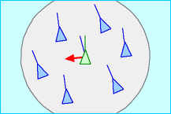

Figure 1: Interaktive Simulation des Boids-Modells nach Craig Reynolds, bei der Sie die drei Schlüsselparameter anpassen können, die das Schwarmverhalten steuern: Separation (Vermeidung von Gedränge), Ausrichtung (Steuerung zur durchschnittlichen Flugrichtung) und Kohäsion (Steuerung zum Massenzentrum).
Separation - Boids vermeiden Gedränge mit ihren Nachbarn

Alignment - Boids richten sich an der durchschnittlichen Flugrichtung ihrer Nachbarn aus
Cohesion - Boids steuern zum Massenzentrum ihrer Nachbarn